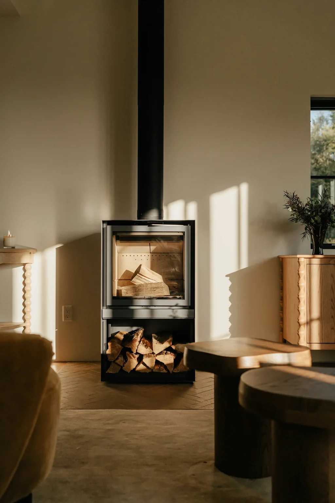

Charpente
Je réalise des charpentes traditionnelles et je rénove, modifie ou renforce les structures existantes.
Découvrir la charpenteJe suis Julien. Avec 12 ans de métier dans le bâtiment, je réalise principalement des travaux de rénovation pour les particuliers. Charpente à modifier, toiture à reprendre ou projet en ossature bois : je recherche une solution adaptée à votre bâtiment.
Qu’il s’agisse d’une petite intervention ou d’une rénovation plus importante, la configuration de votre bâtiment guide mes choix techniques. Je veille à soigner le travail et à respecter l’existant.
Je réalise des charpentes traditionnelles et je rénove, modifie ou renforce les structures existantes.
Découvrir la charpente
Pour vos projets en ossature bois, je prends en charge la structure, l’isolation, le bardage et la toiture.
Découvrir l’ossature bois
Je rénove et répare les toitures en ardoise, en bac acier et en zinc, et je réalise aussi des couvertures neuves.
Découvrir la couverture
Je ramone les conduits des inserts et des poêles à bois ou à granulés. L’intervention peut se limiter au conduit ou inclure l’entretien de votre appareil.
Je nettoie et traite les toitures en ardoise et j’assure le nettoyage des gouttières et des chéneaux.
Parlons de votre toiture
Appelez-moi ou envoyez-moi un SMS pour me présenter votre projet et convenir d’un rendez-vous. Le devis est gratuit et envoyé en moyenne sous deux semaines.